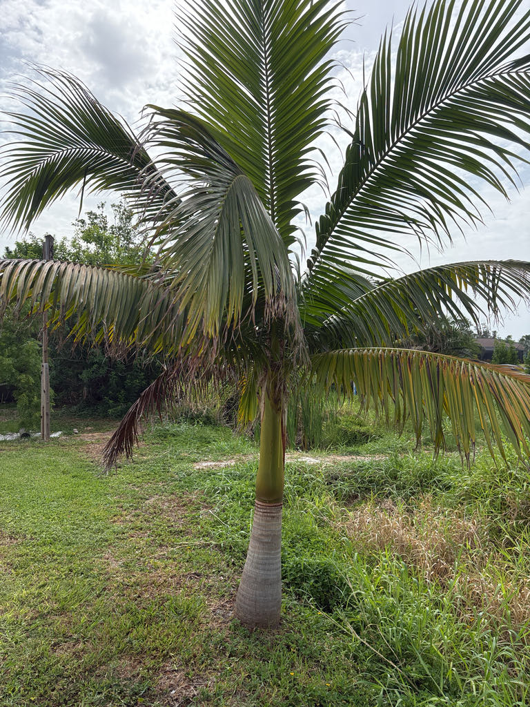

- The Satake Palm is the only species in its entire genus — and its closest botanical relatives are not other Asian palms but Carpoxylon and Neoveitchia, two palms from Vanuatu and Fiji, thousands of miles to the south. How the lineage ended up on a pair of small Japanese islands is a puzzle botanists haven't fully solved.
- The genus was named for Toshihiko Satake, a Japanese industrialist who ran a rice-processing company and spent much of his life as a serious palm researcher. He discovered this species on Ishigaki Island, and his colleague Harold E. Moore at Cornell named the new genus in his honor — a rare case of a business executive earning a place in botanical Latin.
- Seeds of the Satake Palm must be planted almost immediately after collection and kept continuously moist. Let them dry out even briefly and they lose viability entirely — which is a big reason this palm remains scarce in cultivation worldwide despite being well-suited to South Florida's climate.
- Wild populations are restricted to just two small islands in Japan's Ryukyu chain, and the total number of mature trees in the wild is thought to be very small. Every cultivated specimen anywhere in the world represents a meaningful piece of ex-situ conservation for a palm that is quietly disappearing from its home range.
The Satake Palm is native to just two islands at the far southwestern end of Japan's Ryukyu archipelago: Ishigaki Island and Iriomote Island in the Yaeyama group. In the wild it grows on sheltered hillsides and steep slopes in moist subtropical broadleaf forest, buffered year-round by warm ocean air that keeps temperatures remarkably stable.
The main wild population is on Ishigaki Island at Yonehara — a grove significant enough that Japan has designated the palms a national natural monument. A smaller and more scattered population survives on the wilder, less-accessible Iriomote Island. Wild tree numbers are low, and the population appears to be declining, though the reason remains unclear.
In cultivation, the Satake Palm was introduced to South Florida through botanical gardens and specialist palm collectors and now grows at select institutions and private gardens across the region. It has proven well-suited to Florida's subtropical climate and is regarded by palm enthusiasts as one of the finest ornamental palms you can grow here.
- The genus name Satakentia honors Toshihiko Satake (1910–1998), president of the Satake Corporation and a dedicated amateur palm taxonomist who in 1962 published a comprehensive treatment of the palm family covering more than 3,300 species. He noticed that the palms growing on Ishigaki Island were something new to science; his colleague Harold E.
- Moore at Cornell University formally described the genus and named it in Satake's honor in 1969. A small museum dedicated to Satake and to this palm now stands near the Yonehara grove on Ishigaki Island.
- Satakentia belongs to the subtribe Carpoxylinae, a small botanical grouping that also includes Carpoxylon from Vanuatu and Neoveitchia from Fiji. The geographic puzzle — why the third member of this group ended up on Japanese islands far to the north and west — remains unresolved, and makes the Satake Palm a genuinely interesting case study in palm biogeography.
- In its native forest, the palm often grows in even-aged stands on hillslopes, suggesting that establishment is episodic — conditions have to be right for seedlings to take hold. Outside those stands, the Iriomote population is particularly fragile: some trees grow in a historic cemetery, others in remote hill terrain that is difficult even to reach.
The Satake Palm is monoecious — each tree carries both male and female flowers — and the infrafoliar inflorescences attract insects when in bloom. In its native Japanese forest, birds and small animals likely consume the mature fruits, which ripen from yellow to black, and disperse seeds across the hillslopes.
In Florida cultivation, the palm's role for local wildlife is modest: it has no co-evolutionary history with Florida's fauna and does not function as a host plant for native butterflies or moths.
Visitors looking for the park's strongest pollinator and butterfly habitat will find it among the native plantings. The Satake Palm's value here is botanical and conservational — a rare living specimen of a species whose wild population is dwindling on the far side of the Pacific.
Propagation is by seed only. The palm is monoecious — meaning male and female flowers are produced on the same individual tree, unlike dioecious palms where the sexes are separate. Seeds must be collected before they drop and kept continuously moist; they lose viability rapidly if they dry out even briefly, which is the primary obstacle to wider cultivation of this species.
Inflorescences emerge below the crownshaft (infrafoliar) and are branched, with cream to pale flowers arranged in the classic palm triad of one female flanked by two male flowers. Sources describe the inflorescences and developing flower stalks as having a pinkish cast.
In its native subtropical habitat flowering is not strongly seasonal; in Florida cultivation, the summer rainy season — when humidity and soil moisture rise sharply — may encourage bloom, though a specific window is not yet well documented.
Small, ovoid to ellipsoid, and ripening from yellow to black at full maturity — each containing a single seed. The fruit is not a food source for people.
Pinnate (feather-type), elegantly arching, and typically 10 to 14 per crown. Each frond can reach about 10 feet long with regularly spaced, single-fold leaflets arranged in the same plane, giving the crown a clean, almost combed appearance. Leaflets are dark green above and lighter beneath.
Petioles are short; the leaf sheaths form a prominent, closed crownshaft that is distinctively brownish-red to purplish — this is the palm's most recognizable feature.
Solitary and columnar, smooth and gray-green to gray-brown, marked with closely spaced ring scars where old fronds dropped cleanly. The base is typically swollen and surrounded by a mass of adventitious roots. Trunk diameter reaches roughly 12 inches at maturity.
The crownshaft is the place to start — that polished, brownish-red to deep purplish collar where the leaf bases wrap the top of the trunk is the Satake Palm's signature. Look up into the crown for the long, evenly arching fronds with their neat, parallel leaflets; the overall effect is unusually tidy for a palm this size.
At the base of the trunk, watch for the swollen root mass where adventitious roots emerge from the soil. If the palm is in flower, look just below the crownshaft for the branched flower stalks. Ripe fruit, when present, will be small and black; younger fruit still ripening on the stalk will be yellow.
No known toxicity to people, dogs, or cats. The fruit is not a human food source, but it is not harmful. The trunk base can have a tangle of adventitious roots worth stepping around. Otherwise harmless — people just don't eat it.
The wild Satake Palm grove at Yonehara on Ishigaki Island is designated a national natural monument in Japan, and individual trees cannot legally be removed or collected from the wild.
All cultivated specimens worldwide originate from seeds collected under authorized conditions — which, given the seed's hair-trigger viability loss, makes every surviving cultivated palm a minor horticultural achievement.
The Satake Palm's closest relatives — Carpoxylon from Vanuatu and Neoveitchia from Fiji — are both super-tropical palms with almost no cold tolerance. That the Satake Palm can handle a brief dip to around 25 degrees F makes it unusually cold-hardy for its family position, and a better fit for Bradenton's climate than its tropical cousins would be.

- © Randall Carter (CC-BY-NC), via iNaturalist